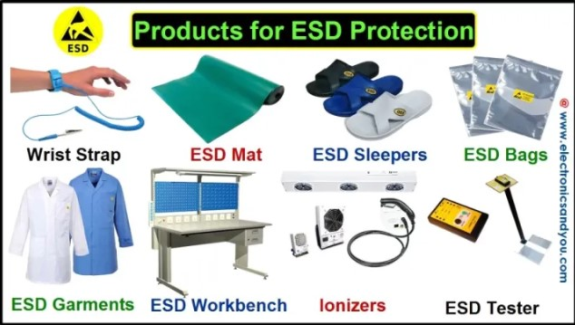

Debugging Workflow, Simulator & Summary
A structured way to chase down an ESD failure, an interactive spark-gap simulator to build intuition for breakdown behavior, a full engineering checklist, and a capstone quiz spanning everything covered in this course.
Click through the decision tree below to see the recommended path from a reported ESD symptom to a confirmed fix.
Adjust the charged-object voltage and the approach gap to see when the air breaks down and a spark forms. This is a simplified illustrative model, not a precise Paschen-law calculator, but it captures the basic relationship: higher voltage breaks down a larger gap.
Design Phase
Layout Phase
Mechanical & Enclosure Phase
Firmware Phase
Test Phase
Manufacturing & Handling Phase



Over ten modules, this course traced ESD from first principles through to field-ready engineering practice: how charge builds through the triboelectric effect and why humidity matters (Modules 01-02); the three standardized discharge models and how IEC 61000-4-2 structures system-level testing (Modules 03-05); how requirements vary sharply across product categories (Module 06); the physical mechanisms behind both catastrophic and latent silicon damage (Module 07); concrete TVS selection and PCB layout practices (Module 08); twelve real-world-style failures spanning every major industry (Module 09); and finally a structured debugging approach and full engineering checklist (this module).
The consistent thread across every case study was the same: ESD immunity is rarely won or lost at the test lab. It is won or lost in component selection, ground return routing, and enclosure design decisions made months earlier. Treat the ESD gun as a verification tool for a design that was already built to survive it, not as the first line of defense.
Course Capstone Quiz
This capstone quiz spans every module of the course. Select the best answer for each question.